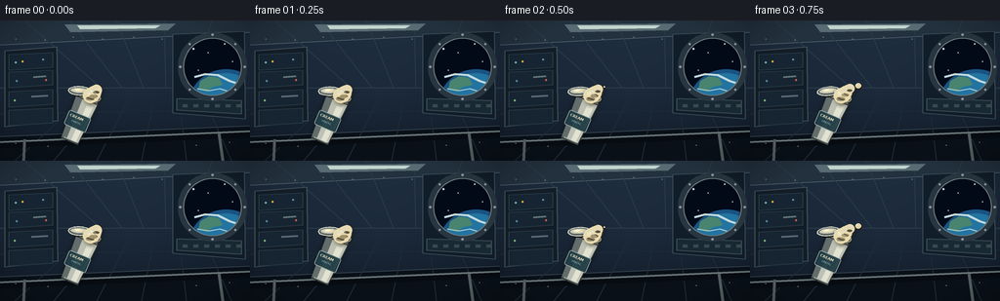
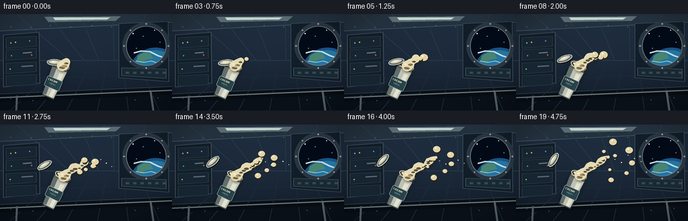

CODING AGENTS AS PIXEL WORLD MODELS
traex/GPT-5.6-Sol · mechanics_0002
点击播放 · 原生 RGB 像素
逐轮保存的候选
回放视频、检查图与代码变化。
每份候选均可单独播放。实际图片检查记录在下方工具轨迹中。
候选 01播放与检查图
点击播放 · 原生 RGB 像素


展开代码变化
--- 上一保存版本
+++ 本次保存版本
@@ -0,0 +1,265 @@
+from pathlib import Path
+import json, math
+import numpy as np
+from PIL import Image, ImageDraw, ImageFilter, ImageFont
+import artifact_io
+
+CASE_DIR = Path(__file__).resolve().parent
+SPEC = json.loads((CASE_DIR / "task_spec.json").read_text())
+W, H = SPEC["width"], SPEC["height"]
+N = SPEC["frames"]
+S = 4
+WS, HS = W*S, H*S
+
+def sc(v): return int(round(v*S))
+def pts(seq): return [(sc(x), sc(y)) for x,y in seq]
+def smooth(x):
+ x = max(0.0, min(1.0, x))
+ return x*x*(3-2*x)
+
+def ellipse_poly(cx, cy, rx, ry, angle, steps=48):
+ ca, sa = math.cos(angle), math.sin(angle)
+ out=[]
+ for k in range(steps):
+ q=2*math.pi*k/steps
+ x,y=rx*math.cos(q),ry*math.sin(q)
+ out.append((cx+ca*x-sa*y,cy+sa*x+ca*y))
+ return out
+
+def poly(draw, seq, fill, outline=None, width=1):
+ draw.polygon(pts(seq), fill=fill)
+ if outline:
+ draw.line(pts(seq+[seq[0]]), fill=outline, width=sc(width), joint="curve")
+
+def line(draw, seq, fill, width):
+ draw.line(pts(seq), fill=fill, width=max(1,sc(width)), joint="curve")
+
+def font(size, bold=False):
+ names = ["/usr/share/fonts/truetype/dejavu/DejaVuSans-Bold.ttf" if bold else "/usr/share/fonts/truetype/dejavu/DejaVuSans.ttf"]
+ for name in names:
+ try: return ImageFont.truetype(name, sc(size))
+ except OSError: pass
+ return ImageFont.load_default()
+
+# fixed stars, rivets, and background controls
+stars=[(198,29,1.0),(213,33,.6),(230,24,.7),(238,42,.5),(203,51,.45),(222,58,.5)]
+rivets=[(16,19),(46,20),(75,17),(105,19),(137,17),(166,19),(16,126),(49,129),(201,128),(235,125)]
+
+# particle: birth, vx, vy, radius, lateral wobble
+particles=[
+ (.06,67,-31,5.5, 3.0),(.16,78,-11,3.9,-2.0),(.25,48,-53,5.0,3.5),
+ (.35,84,12,3.1,-3.0),(.46,55,35,4.2,2.0),(.57,79,-38,3.0,-2.5),
+ (.66,47,-64,2.6,2.0),(.74,91,24,2.1,-1.5),(.82,66,-48,1.8,2.0)
+]
+
+def render_bg(frame_i):
+ yy,xx=np.mgrid[0:HS,0:WS]
+ # cool cylindrical station-wall gradient and soft central illumination
+ radial=np.sqrt(((xx-WS*.52)/(WS*.75))**2+((yy-HS*.48)/(HS*.92))**2)
+ light=np.clip(1-radial,0,1)
+ v=np.clip(0.18+0.40*(1-yy/HS)+0.23*light,0,1)
+ arr=np.empty((HS,WS,3),dtype=np.uint8)
+ arr[...,0]=(10+30*v).astype(np.uint8)
+ arr[...,1]=(16+43*v).astype(np.uint8)
+ arr[...,2]=(25+56*v).astype(np.uint8)
+ im=Image.fromarray(arr,"RGB")
+ d=ImageDraw.Draw(im)
+ # cylindrical ribs and perspective panel seams
+ poly(d,[(0,0),(256,0),(256,12),(0,25)],(35,49,62))
+ poly(d,[(0,119),(256,108),(256,144),(0,144)],(9,16,24))
+ line(d,[(0,25),(256,12)],(75,93,105),1)
+ line(d,[(0,119),(256,108)],(56,71,82),1)
+ for x in [25,71,119,168,217]:
+ line(d,[(x,0),(151+(x-128)*.46,69)],(40,57,70),1)
+ for x in [15,55,99,145,191,237]:
+ line(d,[(x,144),(151+(x-128)*.50,72)],(30,43,54),1)
+ line(d,[(0,69),(256,69)],(43,60,72),1)
+ line(d,[(0,96),(256,91)],(28,43,56),1)
+ # overhead luminous strip
+ poly(d,[(66,4),(180,3),(172,10),(72,12)],(88,107,114))
+ poly(d,[(79,5),(164,5),(159,8),(82,9)],(194,212,205))
+ # left equipment rack
+ poly(d,[(5,31),(58,27),(59,103),(5,109)],(18,29,40),(68,84,94),1)
+ for y0 in [35,53,73,92]:
+ poly(d,[(9,y0),(54,y0-2),(54,y0+13),(9,y0+16)],(22,37,49),(48,68,79),.7)
+ # equipment controls and handles
+ for cx,cy,col in [(16,43,(104,188,166)),(23,42,(219,176,77)),(44,40,(101,139,170)),(17,62,(88,136,168)),(47,61,(206,93,72)),(15,82,(121,182,117))]:
+ d.ellipse((sc(cx-1),sc(cy-1),sc(cx+1),sc(cy+1)),fill=col)
+ line(d,[(34,58),(47,57)],(98,114,121),2)
+ line(d,[(32,78),(49,77)],(91,106,114),2)
+ # right utility panels behind window
+ poly(d,[(177,14),(250,11),(251,101),(177,95)],(17,29,40),(57,76,88),1)
+ poly(d,[(181,80),(247,82),(247,96),(181,92)],(25,41,52),(65,81,90),1)
+ for x in [187,198,209,220,231,242]:
+ d.rectangle((sc(x),sc(86),sc(x+5),sc(89)),fill=(56,73,82))
+ # porthole interior clipped to ellipse
+ win=Image.new("RGB",(WS,HS),(0,0,0)); wd=ImageDraw.Draw(win)
+ wd.ellipse((sc(189),sc(18),sc(246),sc(77)),fill=(3,10,23))
+ for sx,sy,sr in stars:
+ wd.ellipse((sc(sx-sr),sc(sy-sr),sc(sx+sr),sc(sy+sr)),fill=(204,222,232))
+ # earth limb
+ wd.ellipse((sc(193),sc(50),sc(270),sc(124)),fill=(25,83,132))
+ wd.ellipse((sc(198),sc(54),sc(264),sc(117)),fill=(35,116,161))
+ # continents/cloud bands
+ poly(wd,[(205,62),(214,57),(224,59),(228,66),(218,68),(211,73),(203,70)],(73,132,112))
+ line(wd,[(199,58),(210,55),(223,56),(235,62),(244,65)],(191,218,220),2.3)
+ line(wd,[(202,70),(214,72),(225,70),(238,74)],(167,205,212),1.3)
+ mask=Image.new("L",(WS,HS),0); ImageDraw.Draw(mask).ellipse((sc(189),sc(18),sc(246),sc(77)),fill=255)
+ im.paste(win,(0,0),mask)
+ d=ImageDraw.Draw(im)
+ # metallic porthole frame/rings
+ d.line(pts(ellipse_poly(217.5,47.5,32.5,32.5,0))+[pts(ellipse_poly(217.5,47.5,32.5,32.5,0))[0]],fill=(40,54,65),width=sc(6),joint="curve")
+ d.line(pts(ellipse_poly(217.5,47.5,29.5,29.5,0))+[pts(ellipse_poly(217.5,47.5,29.5,29.5,0))[0]],fill=(111,127,132),width=sc(1),joint="curve")
+ for q in range(0,360,45):
+ x=217.5+33*math.cos(math.radians(q)); y=47.5+33*math.sin(math.radians(q))
+ d.ellipse((sc(x-1.2),sc(y-1.2),sc(x+1.2),sc(y+1.2)),fill=(139,150,150))
+ # foreground safety rail
+ line(d,[(-8,128),(268,116)],(7,12,18),7)
+ line(d,[(-8,125),(268,113)],(104,116,118),2)
+ line(d,[(25,122),(24,144)],(83,95,98),3)
+ line(d,[(224,116),(228,144)],(83,95,98),3)
+ for x,y in rivets:
+ d.ellipse((sc(x-.6),sc(y-.6),sc(x+.6),sc(y+.6)),fill=(114,125,128))
+ # subtle cinematic vignette
+ vig=np.zeros((HS,WS),dtype=np.uint8)
+ rr=((xx-WS/2)/(WS*.68))**2+((yy-HS/2)/(HS*.78))**2
+ vig[:]=(np.clip((rr-.45)*110,0,72)).astype(np.uint8)
+ shade=Image.new("RGBA",(WS,HS),(0,0,0,0)); shade.putalpha(Image.fromarray(vig))
+ im=Image.alpha_composite(im.convert("RGBA"),shade).convert("RGB")
+ return im
+
+def draw_container(im,t):
+ d=ImageDraw.Draw(im,"RGBA")
+ cx=80+1.7*t
+ cy=103-1.2*t+0.7*math.sin(t*math.pi*1.3)
+ theta=math.radians(23+2.5*math.sin(t*math.pi*.8))
+ up=np.array([math.sin(theta),-math.cos(theta)])
+ side=np.array([math.cos(theta),math.sin(theta)])
+ M=np.array([cx,cy])+up*27
+ B=np.array([cx,cy])-up*22
+ def P(center,a,b): return tuple(center+side*a+up*b)
+ # soft object shadow/halo to separate silhouette
+ sh=Image.new("RGBA",im.size,(0,0,0,0)); sd=ImageDraw.Draw(sh)
+ body=[P(M,-12,-2),P(M,12,-2),P(B,9,0),P(B,-9,0)]
+ sd.polygon(pts(body),fill=(0,0,0,120))
+ sh=sh.filter(ImageFilter.GaussianBlur(sc(3)))
+ im.alpha_composite(sh)
+ d=ImageDraw.Draw(im,"RGBA")
+ # tub body
+ poly(d,body,(190,192,180,255),(43,51,53,255),1)
+ # shaded side and glossy panel
+ poly(d,[P(M,-12,-2),P(M,-5,-2),P(B,-4,0),P(B,-9,0)],(99,109,107,210))
+ poly(d,[P(M,2,-2),P(M,9,-2),P(B,6,0),P(B,1,0)],(225,226,207,135))
+ # bottom rim
+ line(d,[P(B,-9,0),P(B,9,0)],(57,67,67,255),2)
+ line(d,[P(B,-7,1),P(B,7,1)],(178,183,174,255),1)
+ # label as a rotated local sprite pasted into quadrilateral-ish region
+ lab=Image.new("RGBA",(sc(25),sc(17)),(0,0,0,0)); ld=ImageDraw.Draw(lab)
+ ld.rounded_rectangle((0,0,sc(24),sc(16)),radius=sc(2),fill=(31,59,67,235),outline=(151,171,164,255),width=sc(.7))
+ ld.text((sc(2.5),sc(2.4)),"CREAM",font=font(3.8,True),fill=(238,229,190,255))
+ ld.text((sc(6),sc(8)),"ORBITAL",font=font(2.4,False),fill=(143,190,190,255))
+ # rotate sprite so its vertical follows tub's axis
+ angle_deg=math.degrees(theta)
+ lab=lab.rotate(-angle_deg,resample=Image.Resampling.BICUBIC,expand=True)
+ lp=np.array([cx,cy])+up*(-1)
+ im.alpha_composite(lab,(sc(lp[0])-lab.width//2,sc(lp[1])-lab.height//2))
+ d=ImageDraw.Draw(im,"RGBA")
+ # neck and open dark mouth
+ neck=[P(M,-12,-4),P(M,12,-4),P(M,10,2),P(M,-10,2)]
+ poly(d,neck,(133,140,132,255),(47,55,55,255),1)
+ mouth=ellipse_poly(M[0]+up[0]*2,M[1]+up[1]*2,12,4.7,theta)
+ poly(d,mouth,(42,47,43,255),(220,218,192,255),1.2)
+ inner=ellipse_poly(M[0]+up[0]*2.3,M[1]+up[1]*2.3,9.2,2.8,theta)
+ poly(d,inner,(232,220,179,255))
+ # metallic rim highlight
+ line(d,[P(M,-9,3),P(M,-1,4),P(M,6,3.6)],(255,250,219,220),1)
+ return M,up,side,theta
+
+def draw_lid(im,t,M,theta):
+ d=ImageDraw.Draw(im,"RGBA")
+ e=smooth(t)
+ # lid departs toward upper-left and slowly tumbles
+ c=M+np.array([-9-28*e,-6-18*e])+np.array([0,1.4*math.sin(t*math.pi*2)])
+ a=theta-.35-1.1*t
+ shadow=ellipse_poly(c[0]+1.5,c[1]+2,11,3.8,a)
+ poly(d,shadow,(0,0,0,65))
+ rim=ellipse_poly(c[0],c[1],11.5,4.6,a)
+ poly(d,rim,(103,112,108,255),(224,226,210,255),1)
+ top=ellipse_poly(c[0]-.5,c[1]-.5,9.5,3.1,a)
+ poly(d,top,(194,199,188,255),(69,78,77,255),.7)
+ # cream residue on inner lid
+ cream=ellipse_poly(c[0]-1,c[1]-.7,5.6,1.55,a)
+ poly(d,cream,(235,222,179,245))
+ h1=ellipse_poly(c[0]-2,c[1]-1.1,2.4,.55,a)
+ poly(d,h1,(255,252,221,210))
+
+def draw_cream(im,t,M,up,side):
+ # plume travels up/right independent of tub local direction
+ direction=np.array([.86,-.51]); normal=np.array([.51,.86])
+ grow=smooth(min(1,t*1.12))
+ L=8+42*grow
+ centers=[]; radii=[]
+ count=max(5,int(L/2.4))
+ start=M+up*3
+ for j in range(count):
+ s=L*j/(count-1)
+ p=start+direction*s+normal*(1.5*math.sin(s*.24+0.7)+.7*math.sin(s*.47+1.2))
+ r=max(2.2,6.8-0.075*s)+1.25*math.sin(s*.34+1.0)
+ # late pinch gives a readable neck before first free globule
+ if t>.58 and 24<s<31:
+ r*=.62
+ centers.append(p); radii.append(r)
+ # soft shadow under liquid
+ soft=Image.new("RGBA",im.size,(0,0,0,0)); sd=ImageDraw.Draw(soft)
+ for p,r in zip(centers,radii):
+ sd.ellipse((sc(p[0]-r+1.3),sc(p[1]-r+2),sc(p[0]+r+1.3),sc(p[1]+r+2)),fill=(60,48,30,120))
+ soft=soft.filter(ImageFilter.GaussianBlur(sc(2.0)))
+ im.alpha_composite(soft)
+ cream=Image.new("RGBA",im.size,(0,0,0,0)); cd=ImageDraw.Draw(cream)
+ # bridges prevent a bead-chain look while retaining organic lobes
+ for a,b,ra,rb in zip(centers[:-1],centers[1:],radii[:-1],radii[1:]):
+ cd.line(pts([tuple(a),tuple(b)]),fill=(225,210,165,255),width=sc(2*min(ra,rb)),joint="curve")
+ for p,r in zip(centers,radii):
+ cd.ellipse((sc(p[0]-r),sc(p[1]-r),sc(p[0]+r),sc(p[1]+r)),fill=(232,218,174,255))
+ # warm underside and cool-white upper highlights produce volume
+ for p,r in zip(centers[::2],radii[::2]):
+ cd.ellipse((sc(p[0]-r*.60),sc(p[1]+r*.18),sc(p[0]+r*.50),sc(p[1]+r*.68)),fill=(184,161,116,80))
+ cd.ellipse((sc(p[0]-r*.48),sc(p[1]-r*.55),sc(p[0]-r*.05),sc(p[1]-r*.10)),fill=(255,253,226,210))
+ im.alpha_composite(cream)
+ # detached cream globules
+ d=ImageDraw.Draw(im,"RGBA")
+ for idx,(birth,vx,vy,r,wob) in enumerate(particles):
+ if t <= birth: continue
+ age=(t-birth)/(1-birth)
+ scale=smooth(min(1,age*5))
+ origin=start+direction*(12+18*birth)
+ p=origin+np.array([vx*(t-birth),vy*(t-birth)])
+ p+=normal*(wob*math.sin(age*math.pi))
+ rr=r*scale*(1+.10*math.sin(age*math.pi*2+idx))
+ # cast shadow and cream body, slightly non-circular as liquid deforms
+ d.ellipse((sc(p[0]-rr+1),sc(p[1]-rr*.85+1.5),sc(p[0]+rr+1),sc(p[1]+rr*.85+1.5)),fill=(40,35,26,70))
+ d.ellipse((sc(p[0]-rr),sc(p[1]-rr*.86),sc(p[0]+rr),sc(p[1]+rr*.86)),fill=(226,210,164,255),outline=(244,235,199,255),width=max(1,sc(.45)))
+ d.ellipse((sc(p[0]-rr*.48),sc(p[1]-rr*.52),sc(p[0]-rr*.08),sc(p[1]-rr*.12)),fill=(255,253,228,225))
+ # a few pinhead specks, only late
+ if t>.55:
+ for k in range(5):
+ a=(t-.55)*(.65+.08*k)
+ p=start+np.array([39+48*a+8*k,-18-14*a+6*math.sin(k*2.1)])
+ rr=.55+.22*(k%2)
+ d.ellipse((sc(p[0]-rr),sc(p[1]-rr),sc(p[0]+rr),sc(p[1]+rr)),fill=(246,235,199,230))
+
+def render(i):
+ t=i/(N-1)
+ base=render_bg(i).convert("RGBA")
+ # all foreground elements gently drift, conveying freefall without camera shake
+ M,up,side,theta=draw_container(base,t)
+ draw_lid(base,t,M,theta)
+ draw_cream(base,t,M,up,side)
+ # tiny cool rim light along subject-facing side
+ # downsample gives clean anti-aliased edges
+ out=base.convert("RGB").resize((W,H),Image.Resampling.LANCZOS)
+ return np.asarray(out,dtype=np.uint8)
+
+frames=np.stack([render(i) for i in range(N)],axis=0)
+artifact_io.save(frames,CASE_DIR)
+print(f"saved {frames.shape} RGB frames at {SPEC['fps']} fps")
可观测工具轨迹
实际执行的命令与返回图片。
命令 1exit 0
/bin/bash -lc "cat prompt.txt && printf '\\n--- GENERATION_RULES ---\\n' && cat GENERATION_RULES.md && printf '\\n--- TASK_SPEC ---\\n' && cat task_spec.json"
命令 2exit 0
/bin/bash -lc "find . -maxdepth 2 -type f -printf '%p\\n' | sort && printf '\\nTOOLS\\n' && command -v ffmpeg && command -v python3 && command -v convert || true"
命令 3exit 0
/bin/bash -lc 'cat artifact_io.py'
命令 4exit 0
/bin/bash -lc "cat > generate.py <<'PY'
from pathlib import Path
import json, math
import numpy as np
from PIL import Image, ImageDraw, ImageFilter, ImageFont
import artifact_io
CASE_DIR = Path(__file__).resolve().parent
SPEC = json.loads((CASE_DIR / \"task_spec.json\").read_text())
W, H = SPEC[\"width\"], SPEC[\"height\"]
N = SPEC[\"frames\"]
S = 4
WS, HS = W*S, H*S
def sc(v): return int(round(v*S))
def pts(seq): return [(sc(x), sc(y)) for x,y in seq]
def smooth(x):
x = max(0.0, min(1.0, x))
return x*x*(3-2*x)
def ellipse_poly(cx, cy, rx, ry, angle, steps=48):
ca, sa = math.cos(angle), math.sin(angle)
out=[]
for k in range(steps):
q=2*math.pi*k/steps
x,y=rx*math.cos(q),ry*math.sin(q)
out.append((cx+ca*x-sa*y,cy+sa*x+ca*y))
return out
def poly(draw, seq, fill, outline=None, width=1):
draw.polygon(pts(seq), fill=fill)
if outline:
draw.line(pts(seq+[seq[0]]), fill=outline, width=sc(width), joint=\"curve\")
def line(draw, seq, fill, width):
draw.line(pts(seq), fill=fill, width=max(1,sc(width)), joint=\"curve\")
def font(size, bold=False):
names = [\"/usr/share/fonts/truetype/dejavu/DejaVuSans-Bold.ttf\" if bold else \"/usr/share/fonts/truetype/dejavu/DejaVuSans.ttf\"]
for name in names:
try: return ImageFont.truetype(name, sc(size))
except OSError: pass
return ImageFont.load_default()
# fixed stars, rivets, and background controls
stars=[(198,29,1.0),(213,33,.6),(230,24,.7),(238,42,.5),(203,51,.45),(222,58,.5)]
rivets=[(16,19),(46,20),(75,17),(105,19),(137,17),(166,19),(16,126),(49,129),(201,128),(235,125)]
# particle: birth, vx, vy, radius, lateral wobble
particles=[
(.06,67,-31,5.5, 3.0),(.16,78,-11,3.9,-2.0),(.25,48,-53,5.0,3.5),
(.35,84,12,3.1,-3.0),(.46,55,35,4.2,2.0),(.57,79,-38,3.0,-2.5),
(.66,47,-64,2.6,2.0),(.74,91,24,2.1,-1.5),(.82,66,-48,1.8,2.0)
]
def render_bg(frame_i):
yy,xx=np.mgrid[0:HS,0:WS]
# cool cylindrical station-wall gradient and soft central illumination
radial=np.sqrt(((xx-WS*.52)/(WS*.75))**2+((yy-HS*.48)/(HS*.92))**2)
light=np.clip(1-radial,0,1)
v=np.clip(0.18+0.40*(1-yy/HS)+0.23*light,0,1)
arr=np.empty((HS,WS,3),dtype=np.uint8)
arr[...,0]=(10+30*v).astype(np.uint8)
arr[...,1]=(16+43*v).astype(np.uint8)
arr[...,2]=(25+56*v).astype(np.uint8)
im=Image.fromarray(arr,\"RGB\")
d=ImageDraw.Draw(im)
# cylindrical ribs and perspective panel seams
poly(d,[(0,0),(256,0),(256,12),(0,25)],(35,49,62))
poly(d,[(0,119),(256,108),(256,144),(0,144)],(9,16,24))
line(d,[(0,25),(256,12)],(75,93,105),1)
line(d,[(0,119),(256,108)],(56,71,82),1)
for x in [25,71,119,168,217]:
line(d,[(x,0),(151+(x-128)*.46,69)],(40,57,70),1)
for x in [15,55,99,145,191,237]:
line(d,[(x,144),(151+(x-128)*.50,72)],(30,43,54),1)
line(d,[(0,69),(256,69)],(43,60,72),1)
line(d,[(0,96),(256,91)],(28,43,56),1)
# overhead luminous strip
poly(d,[(66,4),(180,3),(172,10),(72,12)],(88,107,114))
poly(d,[(79,5),(164,5),(159,8),(82,9)],(194,212,205))
# left equipment rack
poly(d,[(5,31),(58,27),(59,103),(5,109)],(18,29,40),(68,84,94),1)
for y0 in [35,53,73,92]:
poly(d,[(9,y0),(54,y0-2),(54,y0+13),(9,y0+16)],(22,37,49),(48,68,79),.7)
# equipment controls and handles
for cx,cy,col in [(16,43,(104,188,166)),(23,42,(219,176,77)),(44,40,(101,139,170)),(17,62,(88,136,168)),(47,61,(206,93,72)),(15,82,(121,182,117))]:
d.ellipse((sc(cx-1),sc(cy-1),sc(cx+1),sc(cy+1)),fill=col)
line(d,[(34,58),(47,57)],(98,114,121),2)
line(d,[(32,78),(49,77)],(91,106,114),2)
# right utility panels behind window
poly(d,[(177,14),(250,11),(251,101),(177,95)],(17,29,40),(57,76,88),1)
poly(d,[(181,80),(247,82),(247,96),(181,92)],(25,41,52),(65,81,90),1)
for x in [187,198,209,220,231,242]:
d.rectangle((sc(x),sc(86),sc(x+5),sc(89)),fill=(56,73,82))
# porthole interior clipped to ellipse
win=Image.new(\"RGB\",(WS,HS),(0,0,0)); wd=ImageDraw.Draw(win)
wd.ellipse((sc(189),sc(18),sc(246),sc(77)),fill=(3,10,23))
for sx,sy,sr in stars:
wd.ellipse((sc(sx-sr),sc(sy-sr),sc(sx+sr),sc(sy+sr)),fill=(204,222,232))
# earth limb
wd.ellipse((sc(193),sc(50),sc(270),sc(124)),fill=(25,83,132))
wd.ellipse((sc(198),sc(54),sc(264),sc(117)),fill=(35,116,161))
# continents/cloud bands
poly(wd,[(205,62),(214,57),(224,59),(228,66),(218,68),(211,73),(203,70)],(73,132,112))
line(wd,[(199,58),(210,55),(223,56),(235,62),(244,65)],(191,218,220),2.3)
line(wd,[(202,70),(214,72),(225,70),(238,74)],(167,205,212),1.3)
mask=Image.new(\"L\",(WS,HS),0); ImageDraw.Draw(mask).ellipse((sc(189),sc(18),sc(246),sc(77)),fill=255)
im.paste(win,(0,0),mask)
d=ImageDraw.Draw(im)
# metallic porthole frame/rings
d.line(pts(ellipse_poly(217.5,47.5,32.5,32.5,0))+[pts(ellipse_poly(217.5,47.5,32.5,32.5,0))[0]],fill=(40,54,65),width=sc(6),joint=\"curve\")
d.line(pts(ellipse_poly(217.5,47.5,29.5,29.5,0))+[pts(ellipse_poly(217.5,47.5,29.5,29.5,0))[0]],fill=(111,127,132),width=sc(1),joint=\"curve\")
for q in range(0,360,45):
x=217.5+33*math.cos(math.radians(q)); y=47.5+33*math.sin(math.radians(q))
d.ellipse((sc(x-1.2),sc(y-1.2),sc(x+1.2),sc(y+1.2)),fill=(139,150,150))
# foreground safety rail
line(d,[(-8,128),(268,116)],(7,12,18),7)
line(d,[(-8,125),(268,113)],(104,116,118),2)
line(d,[(25,122),(24,144)],(83,95,98),3)
line(d,[(224,116),(228,144)],(83,95,98),3)
for x,y in rivets:
d.ellipse((sc(x-.6),sc(y-.6),sc(x+.6),sc(y+.6)),fill=(114,125,128))
# subtle cinematic vignette
vig=np.zeros((HS,WS),dtype=np.uint8)
rr=((xx-WS/2)/(WS*.68))**2+((yy-HS/2)/(HS*.78))**2
vig[:]=(np.clip((rr-.45)*110,0,72)).astype(np.uint8)
shade=Image.new(\"RGBA\",(WS,HS),(0,0,0,0)); shade.putalpha(Image.fromarray(vig))
im=Image.alpha_composite(im.convert(\"RGBA\"),shade).convert(\"RGB\")
return im
def draw_container(im,t):
d=ImageDraw.Draw(im,\"RGBA\")
cx=80+1.7*t
cy=103-1.2*t+0.7*math.sin(t*math.pi*1.3)
theta=math.radians(23+2.5*math.sin(t*math.pi*.8))
up=np.array([math.sin(theta),-math.cos(theta)])
side=np.array([math.cos(theta),math.sin(theta)])
M=np.array([cx,cy])+up*27
B=np.array([cx,cy])-up*22
def P(center,a,b): return tuple(center+side*a+up*b)
# soft object shadow/halo to separate silhouette
sh=Image.new(\"RGBA\",im.size,(0,0,0,0)); sd=ImageDraw.Draw(sh)
body=[P(M,-12,-2),P(M,12,-2),P(B,9,0),P(B,-9,0)]
sd.polygon(pts(body),fill=(0,0,0,120))
sh=sh.filter(ImageFilter.GaussianBlur(sc(3)))
im.alpha_composite(sh)
d=ImageDraw.Draw(im,\"RGBA\")
# tub body
poly(d,body,(190,192,180,255),(43,51,53,255),1)
# shaded side and glossy panel
poly(d,[P(M,-12,-2),P(M,-5,-2),P(B,-4,0),P(B,-9,0)],(99,109,107,210))
poly(d,[P(M,2,-2),P(M,9,-2),P(B,6,0),P(B,1,0)],(225,226,207,135))
# bottom rim
line(d,[P(B,-9,0),P(B,9,0)],(57,67,67,255),2)
line(d,[P(B,-7,1),P(B,7,1)],(178,183,174,255),1)
# label as a rotated local sprite pasted into quadrilateral-ish region
lab=Image.new(\"RGBA\",(sc(25),sc(17)),(0,0,0,0)); ld=ImageDraw.Draw(lab)
ld.rounded_rectangle((0,0,sc(24),sc(16)),radius=sc(2),fill=(31,59,67,235),outline=(151,171,164,255),width=sc(.7))
ld.text((sc(2.5),sc(2.4)),\"CREAM\",font=font(3.8,True),fill=(238,229,190,255))
ld.text((sc(6),sc(8)),\"ORBITAL\",font=font(2.4,False),fill=(143,190,190,255))
# rotate sprite so its vertical follows tub's axis
angle_deg=math.degrees(theta)
lab=lab.rotate(-angle_deg,resample=Image.Resampling.BICUBIC,expand=True)
lp=np.array([cx,cy])+up*(-1)
im.alpha_composite(lab,(sc(lp[0])-lab.width//2,sc(lp[1])-lab.height//2))
d=ImageDraw.Draw(im,\"RGBA\")
# neck and open dark mouth
neck=[P(M,-12,-4),P(M,12,-4),P(M,10,2),P(M,-10,2)]
poly(d,neck,(133,140,132,255),(47,55,55,255),1)
mouth=ellipse_poly(M[0]+up[0]*2,M[1]+up[1]*2,12,4.7,theta)
poly(d,mouth,(42,47,43,255),(220,218,192,255),1.2)
inner=ellipse_poly(M[0]+up[0]*2.3,M[1]+up[1]*2.3,9.2,2.8,theta)
poly(d,inner,(232,220,179,255))
# metallic rim highlight
line(d,[P(M,-9,3),P(M,-1,4),P(M,6,3.6)],(255,250,219,220),1)
return M,up,side,theta
def draw_lid(im,t,M,theta):
d=ImageDraw.Draw(im,\"RGBA\")
e=smooth(t)
# lid departs toward upper-left and slowly tumbles
c=M+np.array([-9-28*e,-6-18*e])+np.array([0,1.4*math.sin(t*math.pi*2)])
a=theta-.35-1.1*t
shadow=ellipse_poly(c[0]+1.5,c[1]+2,11,3.8,a)
poly(d,shadow,(0,0,0,65))
rim=ellipse_poly(c[0],c[1],11.5,4.6,a)
poly(d,rim,(103,112,108,255),(224,226,210,255),1)
top=ellipse_poly(c[0]-.5,c[1]-.5,9.5,3.1,a)
poly(d,top,(194,199,188,255),(69,78,77,255),.7)
# cream residue on inner lid
cream=ellipse_poly(c[0]-1,c[1]-.7,5.6,1.55,a)
poly(d,cream,(235,222,179,245))
h1=ellipse_poly(c[0]-2,c[1]-1.1,2.4,.55,a)
poly(d,h1,(255,252,221,210))
def draw_cream(im,t,M,up,side):
# plume travels up/right independent of tub local direction
direction=np.array([.86,-.51]); normal=np.array([.51,.86])
grow=smooth(min(1,t*1.12))
L=8+42*grow
centers=[]; radii=[]
count=max(5,int(L/2.4))
start=M+up*3
for j in range(count):
s=L*j/(count-1)
p=start+direction*s+normal*(1.5*math.sin(s*.24+0.7)+.7*math.sin(s*.47+1.2))
r=max(2.2,6.8-0.075*s)+1.25*math.sin(s*.34+1.0)
# late pinch gives a readable neck before first free globule
if t>.58 and 24<s<31:
r*=.62
centers.append(p); radii.append(r)
# soft shadow under liquid
soft=Image.new(\"RGBA\",im.size,(0,0,0,0)); sd=ImageDraw.Draw(soft)
for p,r in zip(centers,radii):
sd.ellipse((sc(p[0]-r+1.3),sc(p[1]-r+2),sc(p[0]+r+1.3),sc(p[1]+r+2)),fill=(60,48,30,120))
soft=soft.filter(ImageFilter.GaussianBlur(sc(2.0)))
im.alpha_composite(soft)
cream=Image.new(\"RGBA\",im.size,(0,0,0,0)); cd=ImageDraw.Draw(cream)
# bridges prevent a bead-chain look while retaining organic lobes
for a,b,ra,rb in zip(centers[:-1],centers[1:],radii[:-1],radii[1:]):
cd.line(pts([tuple(a),tuple(b)]),fill=(225,210,165,255),width=sc(2*min(ra,rb)),joint=\"curve\")
for p,r in zip(centers,radii):
cd.ellipse((sc(p[0]-r),sc(p[1]-r),sc(p[0]+r),sc(p[1]+r)),fill=(232,218,174,255))
# warm underside and cool-white upper highlights produce volume
for p,r in zip(centers[::2],radii[::2]):
cd.ellipse((sc(p[0]-r*.60),sc(p[1]+r*.18),sc(p[0]+r*.50),sc(p[1]+r*.68)),fill=(184,161,116,80))
cd.ellipse((sc(p[0]-r*.48),sc(p[1]-r*.55),sc(p[0]-r*.05),sc(p[1]-r*.10)),fill=(255,253,226,210))
im.alpha_composite(cream)
# detached cream globules
d=ImageDraw.Draw(im,\"RGBA\")
for idx,(birth,vx,vy,r,wob) in enumerate(particles):
if t <= birth: continue
age=(t-birth)/(1-birth)
scale=smooth(min(1,age*5))
origin=start+direction*(12+18*birth)
p=origin+np.array([vx*(t-birth),vy*(t-birth)])
p+=normal*(wob*math.sin(age*math.pi))
rr=r*scale*(1+.10*math.sin(age*math.pi*2+idx))
# cast shadow and cream body, slightly non-circular as liquid deforms
d.ellipse((sc(p[0]-rr+1),sc(p[1]-rr*.85+1.5),sc(p[0]+rr+1),sc(p[1]+rr*.85+1.5)),fill=(40,35,26,70))
d.ellipse((sc(p[0]-rr),sc(p[1]-rr*.86),sc(p[0]+rr),sc(p[1]+rr*.86)),fill=(226,210,164,255),outline=(244,235,199,255),width=max(1,sc(.45)))
d.ellipse((sc(p[0]-rr*.48),sc(p[1]-rr*.52),sc(p[0]-rr*.08),sc(p[1]-rr*.12)),fill=(255,253,228,225))
# a few pinhead specks, only late
if t>.55:
for k in range(5):
a=(t-.55)*(.65+.08*k)
p=start+np.array([39+48*a+8*k,-18-14*a+6*math.sin(k*2.1)])
rr=.55+.22*(k%2)
d.ellipse((sc(p[0]-rr),sc(p[1]-rr),sc(p[0]+rr),sc(p[1]+rr)),fill=(246,235,199,230))
def render(i):
t=i/(N-1)
base=render_bg(i).convert(\"RGBA\")
# all foreground elements gently drift, conveying freefall without camera shake
M,up,side,theta=draw_container(base,t)
draw_lid(base,t,M,theta)
draw_cream(base,t,M,up,side)
# tiny cool rim light along subject-facing side
# downsample gives clean anti-aliased edges
out=base.convert(\"RGB\").resize((W,H),Image.Resampling.LANCZOS)
return np.asarray(out,dtype=np.uint8)
frames=np.stack([render(i) for i in range(N)],axis=0)
artifact_io.save(frames,CASE_DIR)
print(f\"saved {frames.shape} RGB frames at {SPEC['fps']} fps\")
PY
python3 generate.py
ls -lh pixels.npz inspection.png transition_check.png index.html frames/00.png frames/19.png"命令 5exit 0
/bin/bash -lc "python3 - <<'PY'
import json, numpy as np
from PIL import Image
from pathlib import Path
p=Path('.')
s=json.loads((p/'task_spec.json').read_text())
z=np.load(p/'pixels.npz')['pixels']
assert z.shape==(s['height'],s['width'],s['frames']) and z.dtype==np.uint32, (z.shape,z.dtype)
files=sorted((p/'frames').glob('*.png'))
assert len(files)==s['frames']
a=np.stack([np.asarray(Image.open(f).convert('RGB')) for f in files])
assert a.shape==(20,144,256,3) and a.dtype==np.uint8
packed=((a[...,0].astype(np.uint32)<<16)|(a[...,1].astype(np.uint32)<<8)|a[...,2])
assert np.array_equal(z,packed.transpose(1,2,0))
mad=np.abs(np.diff(a.astype(np.int16),axis=0)).mean(axis=(1,2,3))
changed=(np.diff(a.astype(np.int16),axis=0)"'!=0).any(axis=3).mean(axis=(1,2))
print('"'validated:',a.shape,a.dtype)
print('frame RGB ranges:',a.min(),a.max())
print('adjacent MAD min/mean/max:',float(mad.min()),float(mad.mean()),float(mad.max()))
print('changed-pixel fraction min/mean/max:',float(changed.min()),float(changed.mean()),float(changed.max()))
print('artifacts:',*[q for q in ['pixels.npz','index.html','inspection.png','transition_check.png','generate.py'] if (p/q).is_file()])
PY"视觉工具实际返回图片 1

保存候选 1 份；完成命令 5 次；可验证图片返回 1 张。原始 API 响应与完整日志保留在本地。